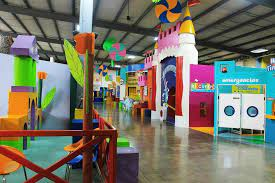
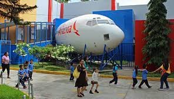

Museo Tin Marín
Mision
Contribuir a la formación de los niños y sus acompañantes en ciudadanos integrales y creativos, mediante el aprendizaje significativo, la orientación cultural y la experimentración divertida con integridad, innovación y trabajo en equipo.
Vision
Ser el espacio favorito, cultural y divertido de los niños para aprender y disfrutar de experiencias únicas, emocionantes e inolvidables; y ser mejores protagonistas de su desarrollo a nivel personal, escolar y social.


El museo Tin Marin está ubicado en la ciudad de San Salvador, El Salvador. Es un espacio cultural dedicado a los niños que pretende transmitir conocimientos mediante un ambiente de diversión.1 Asimismo, intenta reforzar el contenido de los programas educativos de los centros escolares. Las instalaciones —ubicadas dentro del área del parque Cuscatlán— son administradas por la Asociación Museo de los Niños y comprenden 27 salas permanentes de exhibición. Fue inaugurado el año de 1999.